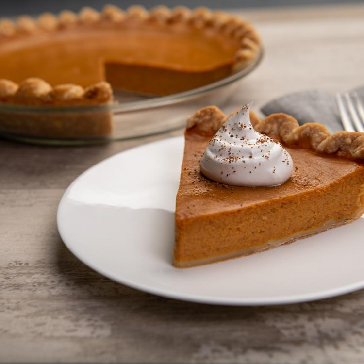

Pumpkin Pie

Ingredients:
- 1 can sweetened condensed milk
- 1 egg
- 1+1/4 tsp ground cinnamon
- 1/2 tsp ground ginger
- 1/2 tsp ground nutmeg
- 1/2 tsp salt
- 1/4 cup brown sugar
- 2 tsb flour
- 2 tbs butter
- 3/4 cup chopped walnuts (optional)
Steps:
- Preheat oven to 425 degrees F (220 degrees C).
- In a mixing bowl, combine the pumpkin, condensed milk, egg, 3/4 teaspoon cinnamon, ginger, nutmeg and salt. Pour batter into the pie crust.
- Bake at 425 degrees F (220 degrees C) for 15 minutes. Reduce oven temperature to 350 degrees F (175 degrees C).
- In a small bowl, combine brown sugar, flour, and remaining 1/2 teaspoon cinnamon. Cut in the butter or margarine until the mixture is crumbly. Stir in walnuts. Sprinkle mixture evenly over the pie. Bake pie for 40 minutes or until a knife inserted one inch from the edge comes out clean. Cool and garnish as desired.